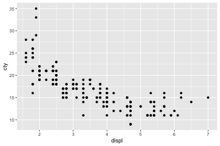
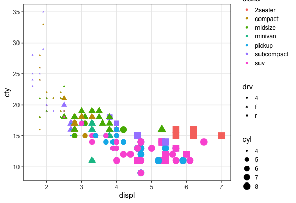
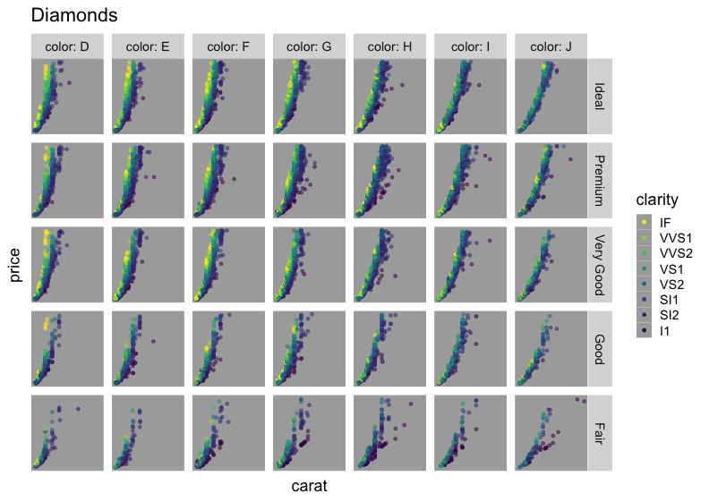

Rにやらせて楽しよう — データの可視化と下ごしらえ
総研大 先導科学研究科
(SOKENDAI, The Graduate University for Advanced Studies)
(SOKENDAI, The Graduate University for Advanced Studies)
2018-05-18
名古屋大学 アドバンス生命理学特論 IGER Seminar
データ可視化の重要性
情報の整理 → 正しい解析・新しい発見


そうは言ってもセンスでしょ? — NO!


ある程度はテクニックであり教養。
デザインの基本的なルールを
知りさえすれば誰でも上達する。
高橋佑磨センパイに教えてもらおう。

見せ方の吟味もRでやると捗るよ
平均値の差？ ばらつきの様子？ 軸はゼロから始まる？

平均値ばかり見て可視化を怠ると構造を見逃す


目次: R+ggplot2できれいな図を合理的に ~25分
データ可視化の意義(済)- ggplot2とは
- 基本的な使い方
- 多変量データの俯瞰も手軽に
- 微調整も画像ファイル出力も再現可能な形で


ggplot2とは

- tidyverseパッケージ群のひとつ
- “The Grammer of Graphics” という体系に基づく設計
- 単にいろんなグラフを「描ける」だけじゃなく
「一貫性のある文法で合理的に描ける」


Rの普通のプロットとは根本的に違う
いきなりggplot2から使い始めても大丈夫。
基本的な使い方: 指示を + していく
ggplot()このデータでよろしくgeom_*()点や線をよろしくtheme_*()軸とか背景の見た目をよろしく
ggplot(data = mpg)
# geom_point(mapping = aes(x = displ, y = cty))
# theme_classic(base_size = 20, base_family = "Helvetica")

基本的な使い方: 指示を + していく
ggplot()このデータでよろしくgeom_*()点や線をよろしくtheme_*()軸とか背景の見た目をよろしく
ggplot(data = mpg) +
geom_point(mapping = aes(x = displ, y = cty))
# theme_classic(base_size = 20, base_family = "Helvetica")

基本的な使い方: 指示を + していく
ggplot()このデータでよろしくgeom_*()点や線をよろしくtheme_*()軸とか背景の見た目をよろしく
ggplot(data = mpg) +
geom_point(mapping = aes(x = displ, y = cty)) +
theme_classic(base_size = 20, base_family = "Helvetica")

途中経過を取っておける
p0 = ggplot(mpg, aes(x = displ, y = cty))
p1 = p0 + geom_point()
p2 = p1 + theme_classic(base_size = 20, base_family = "Helvetica")
p3 = p2 + stat_smooth(method = lm, formula = y ~ log(x))
print(p3)

p0 とか p1 あとで使うよ
データは1つのdata.frameにまとめておく
X軸やY軸になるものがそれぞれ縦1列。横1行が1データ点。
車の燃費に関する多変量データの例 mpg:
print(mpg)
manufacturer model displ year cyl trans drv cty hwy fl class
<chr> <chr> <dbl> <int> <int> <chr> <chr> <int> <int> <chr> <chr>
1 audi a4 1.8 1999 4 auto(l5) f 18 29 p compact
2 audi a4 1.8 1999 4 manual(m5) f 21 29 p compact
3 audi a4 2.0 2008 4 manual(m6) f 20 31 p compact
4 audi a4 2.0 2008 4 auto(av) f 21 30 p compact
--
231 volkswagen passat 2.0 2008 4 manual(m6) f 21 29 p midsize
232 volkswagen passat 2.8 1999 6 auto(l5) f 16 26 p midsize
233 volkswagen passat 2.8 1999 6 manual(m5) f 18 26 p midsize
234 volkswagen passat 3.6 2008 6 auto(s6) f 17 26 p midsize
排気量displと燃費cty以外の列も図に反映させたい…!
Aesthetic mapping でデータと見せ方を紐付け
aes() の中で列名を指定する。
p0 + geom_point(mapping = aes(x = displ, y = cty, size = cyl,
colour = class, shape = drv))

データによらず一律で見せ方を変える
aes() の外で列名を指定する。
p0 + geom_point(mapping = aes(x = displ, y = cty),
size = 6, colour = "darkorange", alpha = 0.4)
色パレットの変更 scale_colour_*()
個々の色を自分で決めず、既存のパレットを利用するのが吉。
e.g., ColorBrewer,
viridis
(色覚多様性の対策にも有効)
#pQ+ scale_colour_brewer(palette = "Spectral")
pQ + scale_colour_viridis_c(option = "magma", direction = -1)
値に応じて切り分けて表示 (1変数facet)
p1 + facet_wrap(~ class, ncol = 4L)
ggplotの真骨頂！ これが無かったら結構たいへん。
値に応じて切り分けて表示 (≥2変数facet)
p1 + facet_grid(cyl ~ class)
多変量データの俯瞰に便利

値を変えず座標軸を変える scale_*, coord_*
ggplot(data = diamonds, aes(carat, price)) +
geom_point(alpha = 0.25) +
scale_x_log10(limit = c(0.1, 10)) +
scale_y_log10(breaks = c(1, 5, 10) * 1000) +
coord_cartesian(ylim = c(800, 12000)) +
labs(title = "Diamonds", x = "Size (carat)", y = "Price (USD)")
データと関係ない部分の見た目を調整 theme
既存の theme_*()
をベースに、theme() 関数で微調整。
p1 + theme_bw() + theme(
panel.background = element_rect(fill = "khaki"), # 箱
panel.grid.major = element_line(colour = "red"), # 線
axis.title = element_text(size = 32), # 文字
axis.text = element_blank() # 消す
)
論文のFigureみたいに並べる
別のパッケージ (cowplot や patchwork) の助けを借りて
pAB = cowplot::plot_grid(p2, p2, labels = c("A", "B"), nrow = 1L)
cowplot::plot_grid(pAB, p2, labels = c("", "C"), ncol=1L)
ファイル名もサイズも再現可能な作図
widthやheightが小さいほど、文字・点・線が相対的に大きく
# 7inch x 300dpi = 2100px四方 (デフォルト)
ggsave("mpg1.png", p1) # width = 7, height = 7, dpi = 300
# 4 x 300 = 1200 全体7/4倍ズーム
ggsave("mpg2.png", p1, width = 4, height = 4) # dpi = 300
# 2 x 600 = 1200 全体をさらに2倍ズーム
ggsave("mpg3.png", p1, width = 2, height = 2, dpi = 600)
# 4 x 300 = 1200 テーマを使って文字だけ拡大
ggsave("mpg4.png", p1 + theme_bw(base_size = 22), width = 4, height = 4)


他にどんな種類の geom_*() が使える？
なんでもある。 公式サイトを見に行こう。

まとめ
- こんなグラフを描きたいな
- だいたい何でもggplot2でできるよ。
- どうやるんだっけ
- たす
p = ggplot(data) + geom_*() + scale_*() + theme_*() - 保存
ggsave("fig1.png", p, width=4, height=3, dpi=300) - 忘れるたびに調べる。徐々に身につく。
- ちゃんと描こうと思うと結構な量のプログラムになるね…
- そうだね。でもそれは財産になるよ。
- R for Data Science — Hadley Wickham and Garrett Grolemund
- http://r4ds.had.co.nz/
- 英語版書籍
- 日本語版書籍(Rではじめるデータサイエンス)
- ggplot2公式ドキュメント
参考
- ggplot2は単なるパッケージからプラットフォームに
- 拡張パッケージも続々と出てる。
- グラフ/ネットワーク ggraph, 系統樹 ggtree, ゲノム ggbio, …
- 発展的な内容
gridを習得するとグラフの中にグラフを入れたり、
表形式のデータを図としてグラフに並べたりもできる。
@yutannihilationさんの記事 とかを参考に。

- もちろん地図とかもできる
- OK, Google. “ggplot 地図”
- 3Dは苦手
- 本当に3Dが必要? 色分けやファセットで足りない?
- 別のパッケージ(rgl, plotly)でやる。